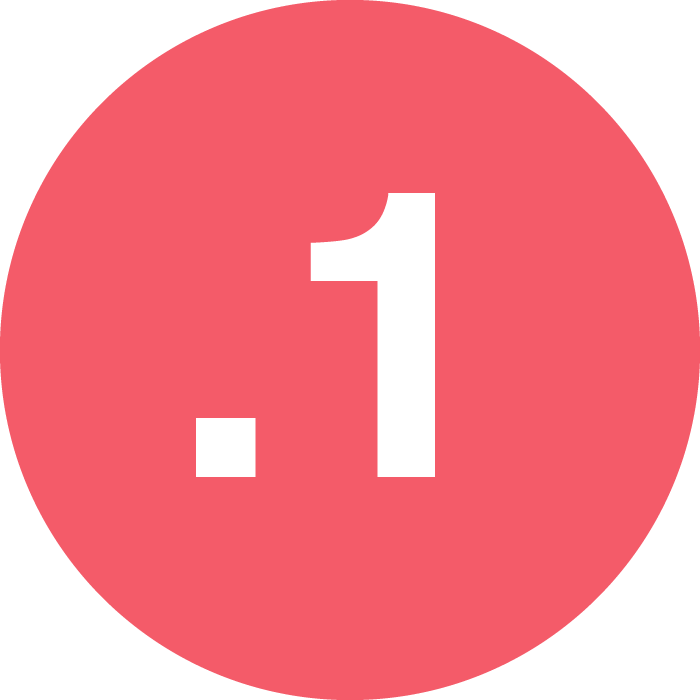
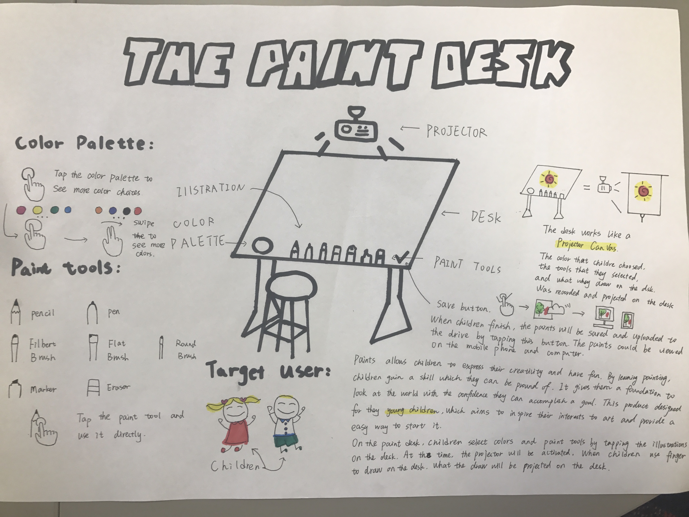
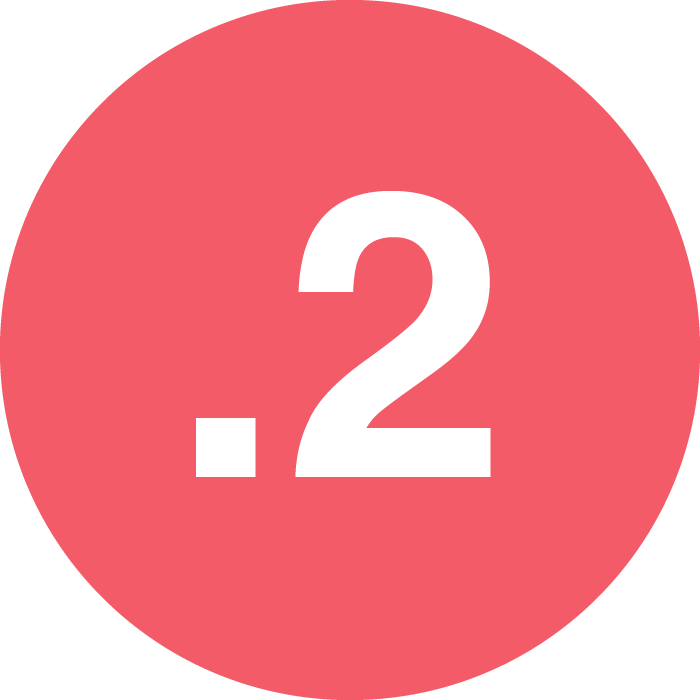
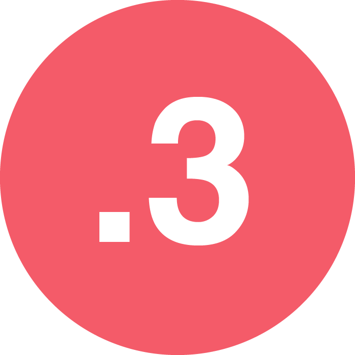
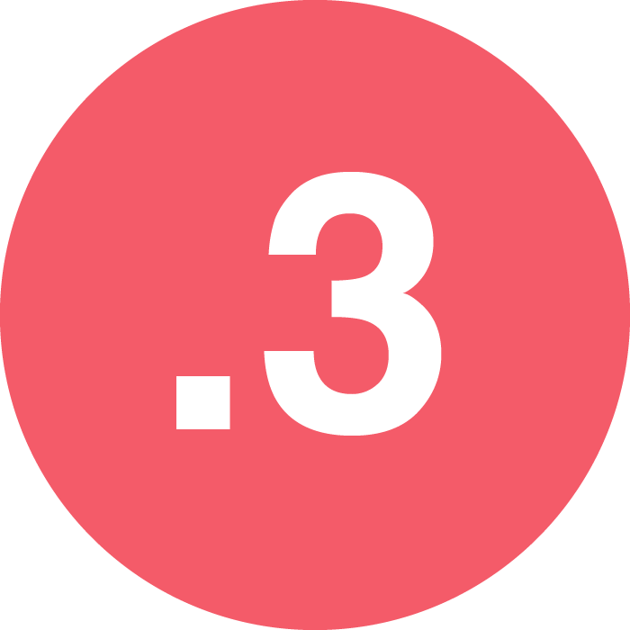
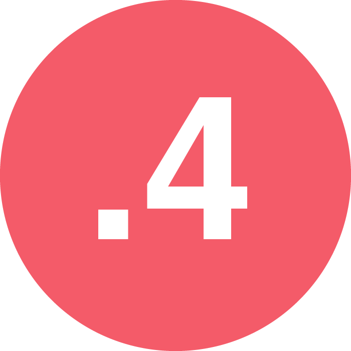
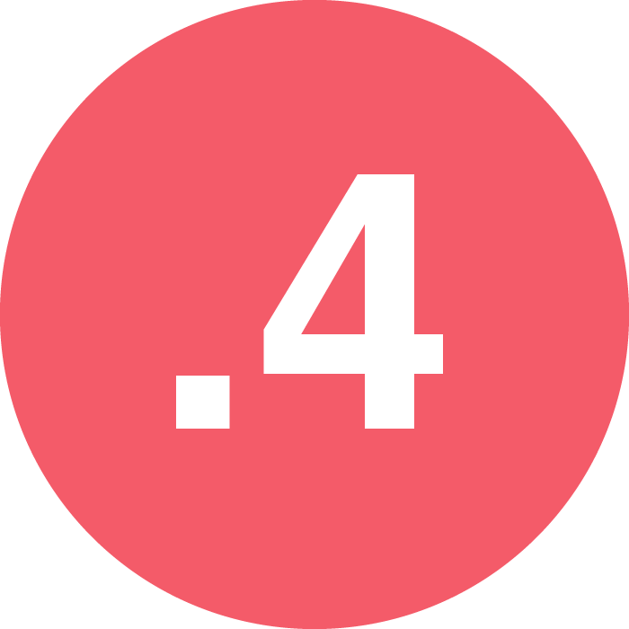
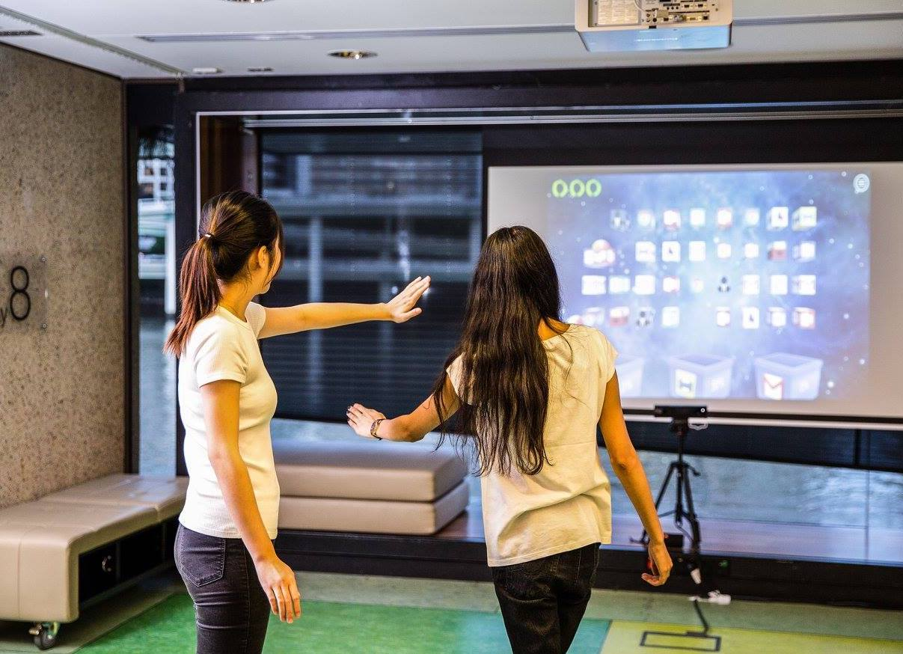
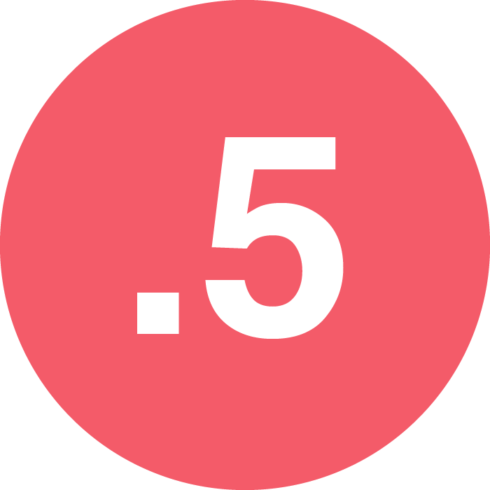

The previous work that previously submitted, which include the inspiration, promotional material, game demo, video and the reflective journal.
This painting desk is designed for the young children who start learning. It composes by a desk and a projector. There are some illustrations of color palette and painting tools. Children could tap the illustrations on the desk to select tools and use their finger to draw directly on the desk. Some interactive method like tapping, swiping and spinning will be used in this product.  
The video combines the animation and .The animation is used to introduce the background research includes what sedentary behavior is and the dangers of sedentary behavior. Comparing the boring data, and the beautiful animations will attract more people. I found a fantastic website called AnimationMaker which helps me to finish the animation. Before the team starts filming, we wrote a detailed script which was helpful while shooting the video.
The video gives a detailed explanation of “sitting is the new smoking,” and All the team member introduce Beakfree system from different aspects. Lots of scene transitions are added into the video to make it more attractive. Also, the video would be played in the exhibition, so I add the subtitle for the video to help people to read it. Watch the video
 

The team made a poster and a flyer as the promotional material. On the poster, we put the necessary information on the Breakfree system and the team. We used bright color but with strong contrast like blue, red, black and white to ensure it looks nice and readable.
The flyer follows the same color scheme as the flyer. The bright blue, black and white is the theme color. On the flyer, we put the horrible facts of sedentary behavior aim to popularize the dangers of sitting for a long time. On the second page, the slogan of our product “sitting is the new smoking, Breakfree is the solution” was put on the title. We give a detailed description of how to interact with the system, the purpose we were targeting and how it works. The Poster. The Flyer.
 

The installation is composed of a projector, screen, and a Kinect. Users stand in front of the screen and use the left hand to collect the specific icon and put it in the basket with some body movements. All the icons are the annoying things in the office, such like the email, documents, and even the boss. Collecting them and put into the “trash bin” could be considered as a cure for stress. During the play, the user could finish some Tai Chi movements. Tai Chi was a gentle and safe way to stretch people and make them feel relax. The combination of Tai Chi and office icons could relax offices workers body and the mind to the greatest extent.Design proposal. Slides. Final report.  
The reflective journal record everything happened during the whole semester, include the design process, brainstorming and every meeting. View the blog